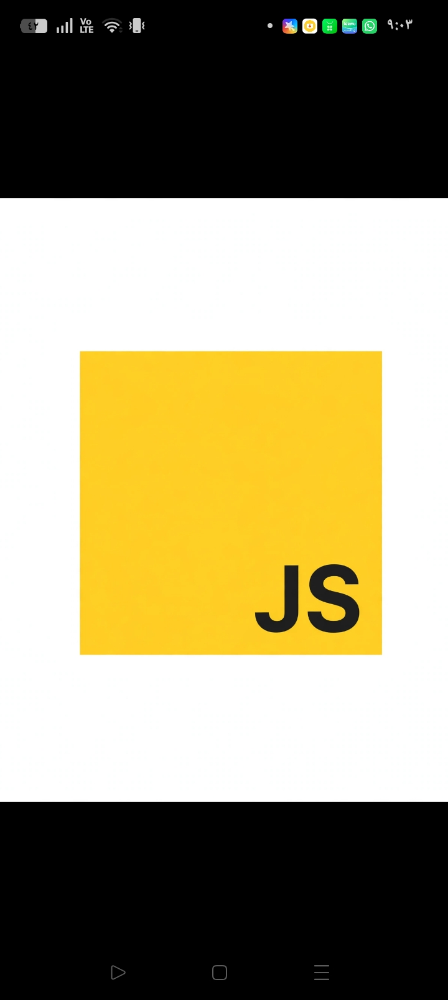

اسم الطالبة: نسمة ياسر احمد راغب محمد
الرقم الجامعي: 2503684 | السكشن: 164
تُعد لغة جافا سكريبت (JavaScript) واحدة من أهم ركائز الويب الحديث،

جافا سكريبت هي لغة برمجة عالية المستوى، تفسيرية
ملاحظة تاريخية
تتمتع اللغة بشعبية جارفة ومكانة لا تُنافس في سوق العمل التقني نظراً لعدة خصائص فريدة:
رغم قوتها، تواجه اللغة بعض التحديات مثل الأمان على جهة العميل (حيث يتم تنفيذ الكود على جهاز المستخدم مباشرة)، واختلاف دعم المتصفحات للأكواد المتقدمة أحياناً.2. أهم مميزات جافا سكريبت
جدول مقارنة: لغات الويب الأساسية الثلاث
اللغة
دورها الأساسي في الصفحة
المسؤولية
HTML
الهيكل والبنية الأساسية
ترتيب ونصوص وعناصر الصفحة
CSS
التنسيق والمظهر
الألوان، الخطوط، والتصميم المرئي
JavaScript
السلوك والتفاعل
الاستجابة لأفعال المستخدم والديناميكية
3. المجالات والاستخدامات الحديثة
4. عيوب أو تحديات جافا سكريبت
المراجع والمصادر